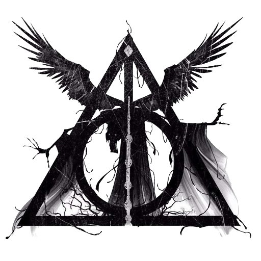

Artículo
Harry Potter es una serie de novelas fantásticas escrita por la autora británica J. K. Rowling, en la que se describen las aventuras del joven aprendiz de magia y hechicería Harry Potter y sus amigos Hermione Granger y Ron Weasley, durante los años que pasan en el Colegio Hogwarts de Magia y Hechicería. El argumento se centra en la lucha entre Harry Potter y el malvado mago Lord Voldemort, quien asesinó a los padres de Harry en su afán de conquistar el mundo mágico.
Desde el lanzamiento de la primera novela, Harry Potter y la piedra filosofal, en 1997, la serie logró una inmensa popularidad, críticas favorables y éxito comercial alrededor del mundo.1 Para julio de 2013 se habían vendido entre 400 y 450 millones de ejemplares de los siete libros,2 que los ubican como la segunda serie de libros más vendida de la historia y los cuales han sido traducidos a más de 65 idiomas,3 entre los que se incluyen el latín y el griego antiguo. El séptimo y último libro, Harry Potter y las reliquias de la Muerte, fue lanzado mundialmente en inglés el 21 de julio de 2007,4 mientras que en español se publicó el 21 de febrero de 2008.
Cabe aclarar que se sacaron a la venta tres ediciones, (1.ª en 1997, 2.ª y 3.ª en 2015) en caso de que todavía no leíste ninguno de los libros y quieres hacerlo, es recomendable leer los siete libros de la misma edición, debido a que cada una narra las historias de diferentes formas. Esto lo aclaró la misma J.K. Rowling en una entrevista con un medio del Reino Unido en el año 2017.
El éxito de las novelas ha hecho de la marca Harry Potter una de las más exitosas del mundo, con un valor de 15 000 millones de dólares,6 y a Rowling la primera escritora de la historia en alcanzar los 1 000 millones de dólares en concepto de ganancias gracias a su trabajo.7 En 2005, fue la novena persona con el ingreso anual más alto del mundo
Siguenos en nuestras redes: